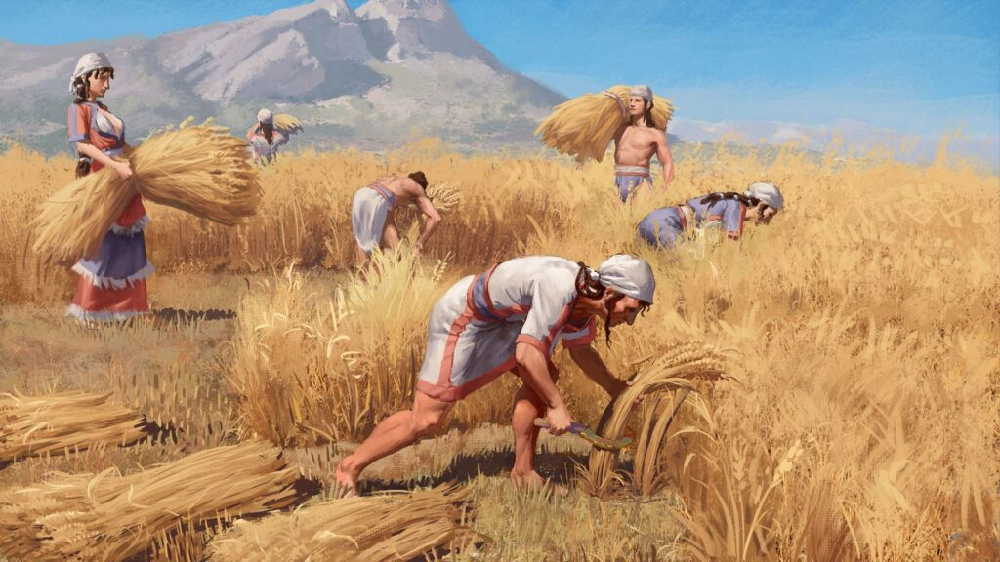
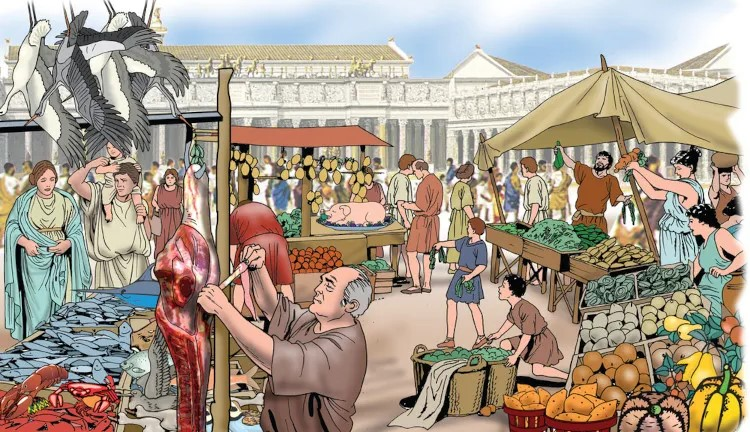
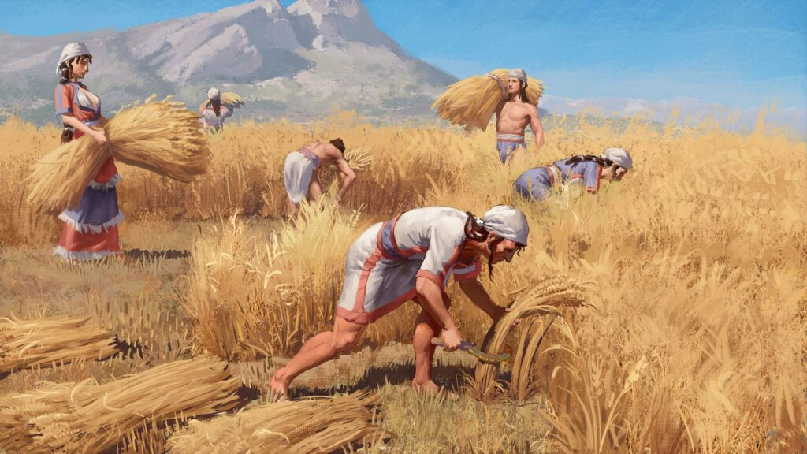
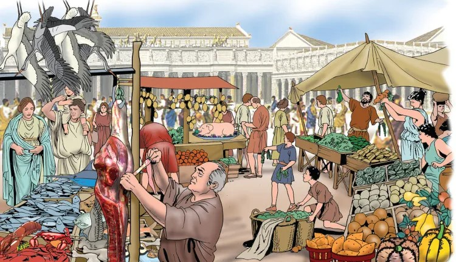
SILVA, Daniel Neves. "Grécia Antiga"; Brasil Escola. Disponível em:
https://brasilescola.uol.com.br/historiag/grecia-antiga.htm. Acesso em 15 de maio de 2025.
BEZERRA, Juliana. "Grécia Antiga"; Toda Matéria. Disponível em:
https://www.todamateria.com.br/grecia-antiga/.Acesso em 15 de maio de 2025.
RODRIGUES, Fabiano. "Cultura e Antiguidades Greco-Romana"; Oeste360. Disponível em: https://www.oeste360.com/noticia/41742/historia-cultura-e-antiguidades-greco-romana. Acesso em 15 de maio de 2025.
SILVA, Daniel Neves. "Roma Antiga"; Brasil Escola. Disponível em:
https://brasilescola.uol.com.br/historiag/roma-antiga.htm.
Acesso em 15 de maio de 2025.
BEZERRA, Juliana. "Civilização Romana"; Toda Matéria. Disponível em:
https://www.todamateria.com.br/civilizacao-romana/.
Acesso em 15 de maio de 2025.
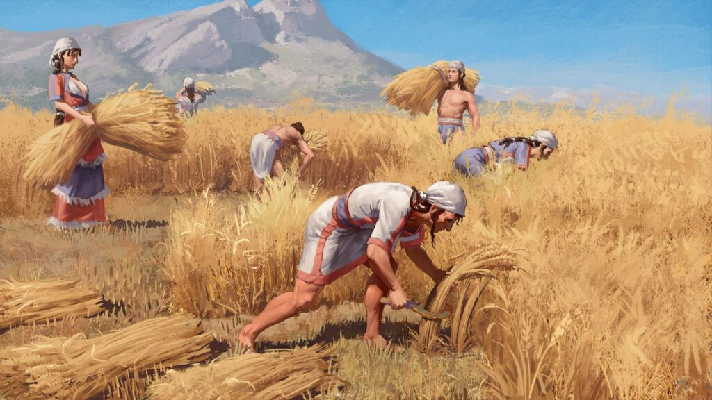
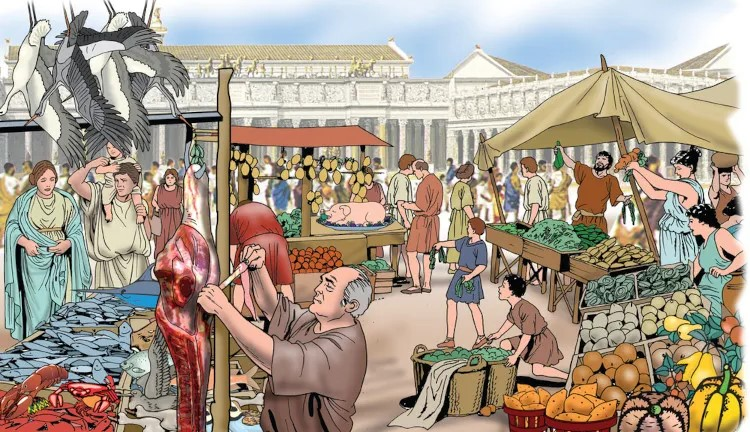
Foto por: Bukhta Yurii https://www.shutterstock.com/pt/image-photo/ancient-coin-roman-empire-391770229
Pintura por: Nikola Nevenov https://www.eurekalert.org/multimedia/970692?language=german
Pintura por: Massimo Todaro https://www.shutterstock.com/pt/image-illustration/ancient-rome-meat-fruit-market-1732098355
 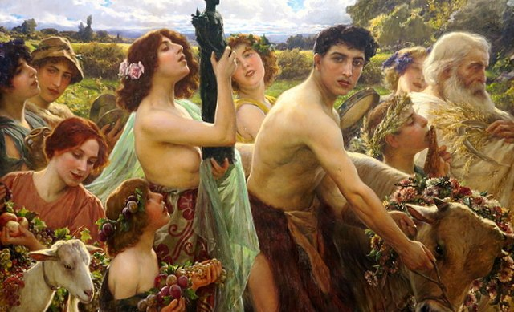
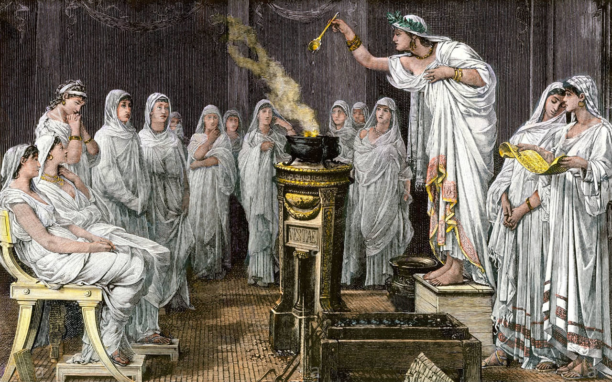
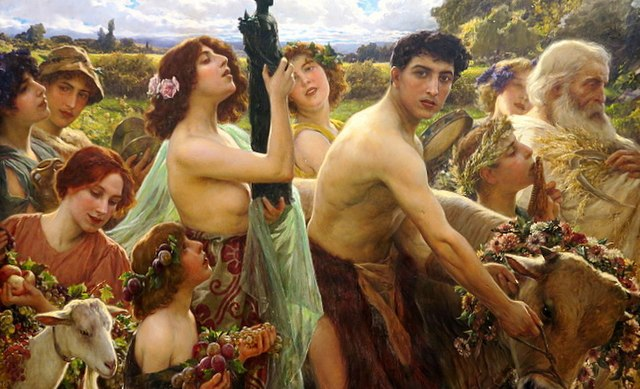
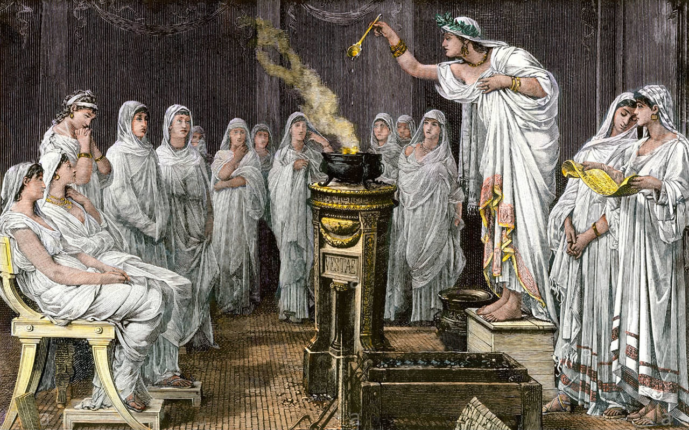
Foto por: Dimitrios https://stock.adobe.com/br/images/zeus-athena-and-other-ancient-greek-gods-and-deities-athens/57770913?prev_url=detail
Pintura por: Cesare Saccaggi https://www.gognasrl.it/antiquariato/gotha/saccaggi-cesare-ave-natura-1910/
Pintura por: North Wind Pictures https://www.bridgemanimages.com/en-US/noartistknown/vestals-school-virgin-women-who-worship-the-goddess-vesta-goddess-of-the-home-and-symbol-of-fidelity/engraving/asset/4857631?offline=1
 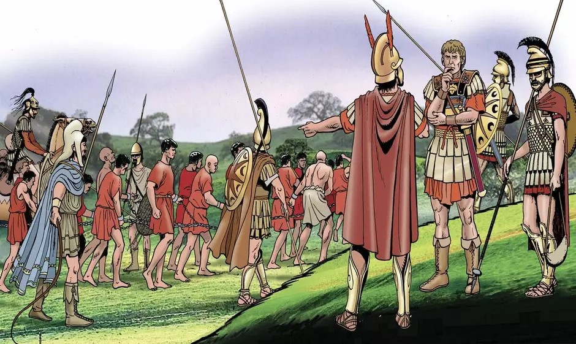
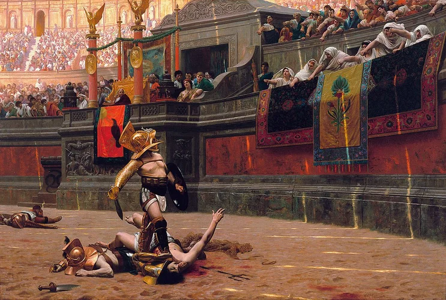
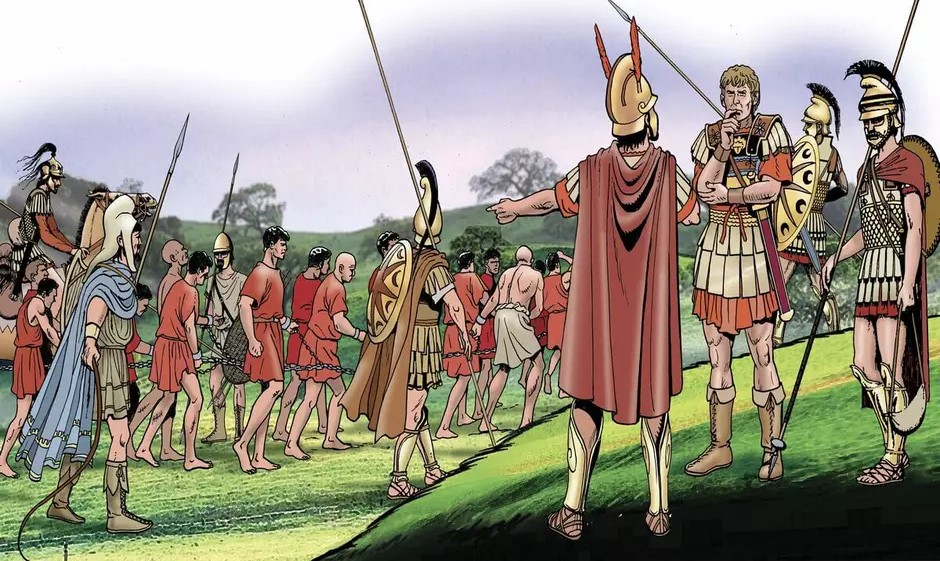
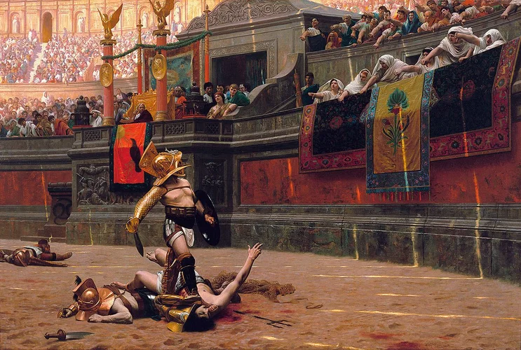
Pintura por: Stuart Boyle https://www.bridgemanimages.com/en-US/boyle/finish-of-the-foot-race-at-the-olympic-games-colour-litho/colour-lithograph/asset/11717300
Pintura por: Massimo Todaro https://www.shutterstock.com/pt/image-illustration/ancient-rome-roman-soldiers-prisoners-chains-2064200498
Pintura por: Jean-Léon Gérôme https://phxart.org/arts/pollice-verso-thumbs-down-pollice-verso-con-el-pulgar-al-reves/
 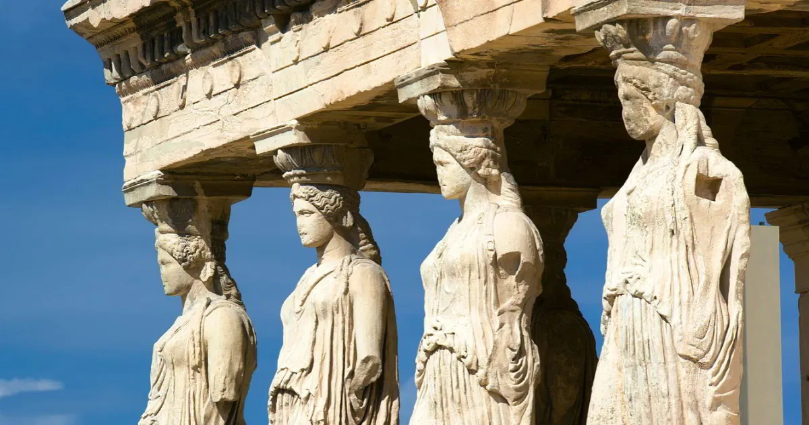
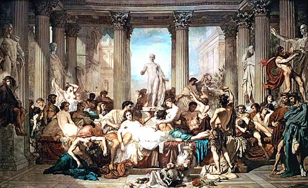
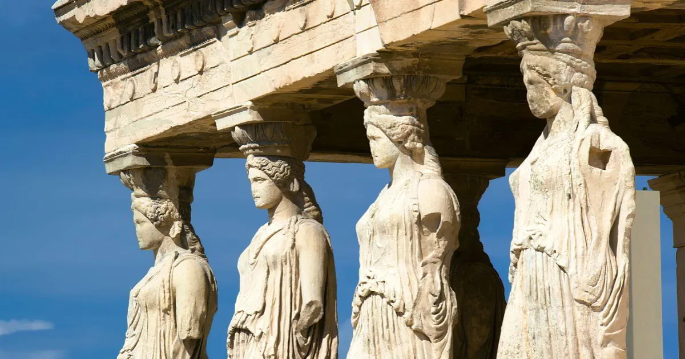
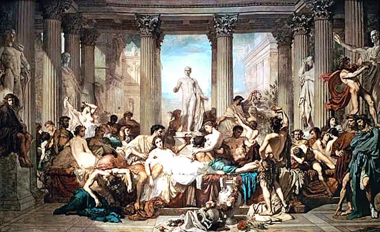
Pintura por: Philipp von Foltz
Domínio Público
Foto por: SuperCoolPhotography https://stock.adobe.com/br/images/caryatid-sculptures-acropolis-of-athens-greece/59008563?prev_url=detail
Pintura por: Thomas Couture
Domínio Público
Pintura por: Roger Payne https://bridgemanondemand.com/featured/athens-crowning-glory-roger-payne.html
Pintura por: Massimo Todaro https://www.shutterstock.com/pt/image-illustration/ancient-rome-battle-roman-soldiers-against-1729426903
Pintura por: Williamson, J. https://www.bridgemanimages.com/en/williamson/l-empire-romain-carte-postale/carte-postale/asset/3794121